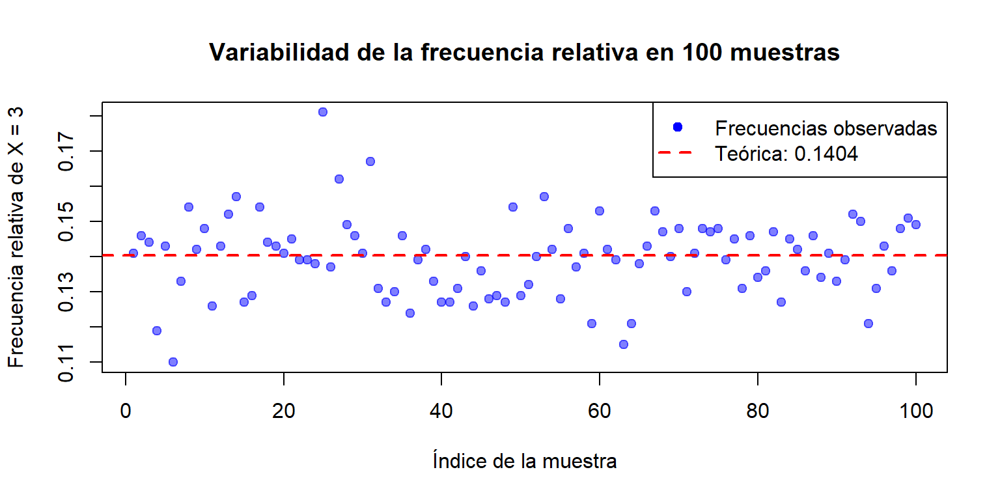
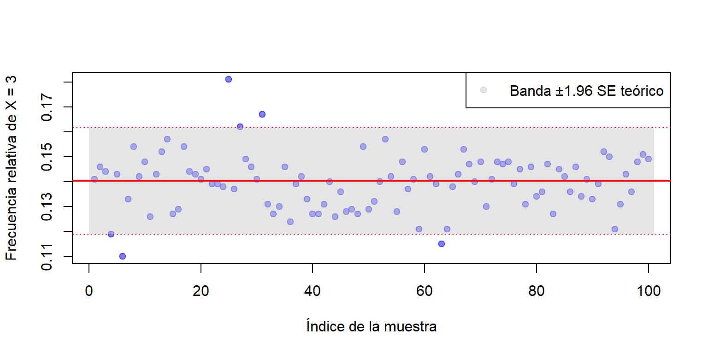
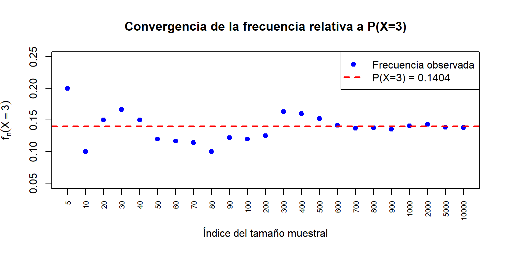
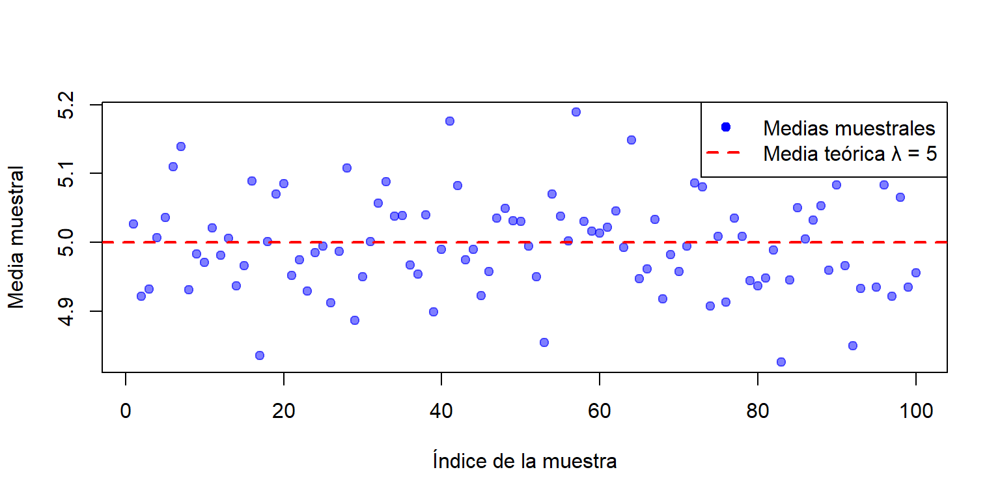
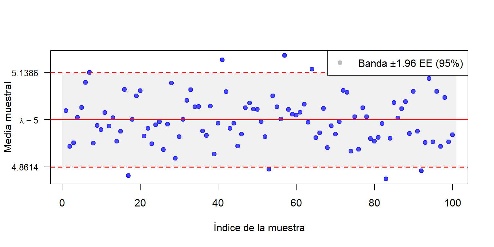
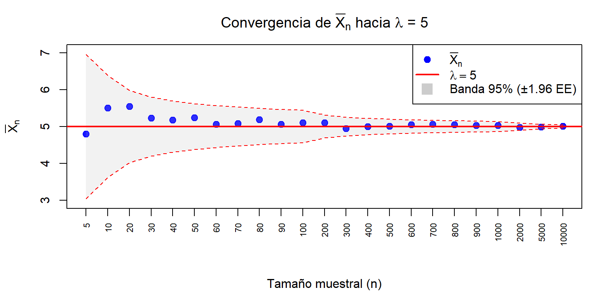

1 Estimación de la probabilidad y la media
1.1 Problema 1
Una empresa de servicio técnico recibe, en promedio, 5 solicitudes de reparación por hora. Suponiendo que el número de solicitudes sigue una distribución de Poisson, realiza las siguientes actividades:
1.1.1 Cálculo de probabilidad teórica
- Calcula la probabilidad de que en una hora lleguen exactamente 3 solicitudes usando la fórmula de la distribución de Poisson. Expresa el resultado como \(P(X = 3)\).
Primero, extraemos los datos clave que nos proporciona el problema:
Tasa promedio de ocurrencia (\(\lambda\)) La empresa recibe un promedio de 5 solicitudes por hora. Por lo tanto, \(\lambda = 5\).
Número de eventos deseado (\(k\)) Queremos calcular la probabilidad de recibir exactamente 3 solicitudes. Por lo tanto, \(k = 3\).
Constante matemática (\(e\)): La base de los logaritmos naturales, que equivale aproximadamente a \(2.71828\).
La probabilidad de que ocurran exactamente \(k\) eventos en un intervalo dado, cuando la tasa promedio es \(\lambda\), se calcula con la siguiente fórmula matemática:
\[P(X=k) = \frac{(e^{-\lambda})\cdot\lambda^k}{k!}\]
Luego, sustituyendo \(\lambda = 5\) y \(k = 3\), se tiene
\[ \begin{align} P(X=3) &= \frac{(e^{-5})(5^3)}{3!} \\ &= \frac{125 e^{-5}}{6}\\ &= \frac{(125)(0.0067379)}{6} \\ &= \frac{0.8422375}{6} \\ &\approx 0.1404 \end{align} \] La probabilidad teórica de que la empresa reciba exactamente 3 solicitudes de reparación en una hora es aproximadamente del \(14.04\%\).
1.1.2 Simulación con una muestra
- Genera una muestra aleatoria de tamaño \(n = 1,000\) con
rpois(n, lambda = 5). - Calcula la frecuencia relativa para \(X = 3\) (\(f_n(X = 3)\)).
- Compara e interpreta el resultado frente a la probabilidad teórica.
Para realizar esta simulación, generamos \(1,000\) valores aleatorios que siguen una distribución de Poisson con una tasa promedio \(\lambda = 5\). Luego, contamos cuántas veces aparece exactamente el valor \(3\) (frecuencia absoluta) y lo dividimos entre el total de la muestra (\(1,000\)) para obtener la frecuencia relativa.
La tabla 1.1 muestra los resultados de la simulación.
| Tamaño de la Muestra | Frecuencia Absoluta | \(f_n(X = 3)\) | \(P(X=3)\) | Diferencia |
|---|---|---|---|---|
| 1000 | 141 | 0.141 | 0.1404 | 0.0006 |
La frecuencia relativa obtenida en la simulación \(f_n(X = 3) = 141/1000 = 0.141\) es sumamente cercana a la probabilidad teórica calculada matemáticamente \(P(X=3) = 0.1404\).
Este resultado ilustra la Ley de los Grandes Números. Esta ley establece que, a medida que aumentamos el tamaño de nuestra muestra (en este caso n = 1,000, que es un número bastante grande), la frecuencia relativa o empírica de un evento tiende a acercarse cada vez más a su probabilidad teórica real.
1.1.3 Análisis de la variabilidad entre muestras
- Genera \(100\) muestras aleatorias de tamaño \(n = 1{,}000\).
- Calcula la frecuencia relativa para \(X = 3\) en cada muestra.
- Construye un gráfico de dispersión:
- Eje \(X\): Indexación por cada muestra (1 a 100).
- Eje \(Y\): Frecuencias relativas \(f_n(X = 3)\).
- Dibuja una línea horizontal en \(P(X = 3)\) y comenta si existe una tendencia.
La gráfica 1.1 muestra el gráfico obtenido al generar \(100\) muestras aleatorias de tamaño \(n = 1{,}000\). En él se observa:
Cada punto azul representa la frecuencia relativa de una muestra.
La línea roja continua marca la probabilidad teórica \(P(X=3) = 0.1404\).

Figure 1.1: Variabilidad entre muestras
Para cuantificar la variabilidad esperada por azar, se calculó el error estándar teórico (SE) de la frecuencia relativa. Sea \(p = P(X=3) = 0.1404\), entonces
\[\text{SE} = \sqrt{\frac{p(1-p)}{n}} = \sqrt{\frac{(0.1404)(0.8596)}{1000}}\approx 0.0110\] Se construyó una banda de \(\pm 1.96\) errores estándar alrededor de \(p\), la cual estará limitada por el intervalo \([p - 1.96\,\text{SE},\; p + 1.96\,\text{SE}] \approx [0.1188,\; 0.1620]\). Esta banda contiene aproximadamente el \(95\%\) de las frecuencias relativas si el modelo es correcto y el tamaño de muestra es grande (aproximación normal).

Figure 1.2: Validación empírica de la probabilidad teórica mediante simulación: banda de confianza aproximada al 95%
La gráfica 1.2 muestra que la mayoría de las frecuencias
relativas (\(95\) de cada \(100\), en promedio) caen dentro de la banda
gris. En este caso particular, con la semilla 1 (set.seed(1)), se
puede contar cuántos puntos quedan fuera para verificar si se aproxima
al \(5\%\) esperado (por ejemplo, podrían ser 4 o 6). Esto confirma que la
variabilidad observada es coherente con la teoría.
1.1.4 Impacto del tamaño muestral:
- Genera muestras aleatorias con tamaños: 5, 10, 20, 30, 40, 50, 60, 70, 80, 90, 100, 200, 300, 400, 500, 600, 700, 800, 900 y 1,000. Agrega valores si consideras que mejora el análisis de los resultados.
- Calcula la frecuencia relativa de \(X = 3\) para cada tamaño.
- Construye un gráfico de dispersión:
- Eje \(X\): Indexación (1 al 20) por cada tamaño muestral.
- Eje \(Y\): Frecuencias relativas \(f_n(X = 3)\).
- Dibuja la línea en \(P(X = 3)\) y describe si aparece una tendencia.
Se seleccionan los siguientes tamaños de muestras \(n \in \lbrace 5, 10, 20, 30, 40, 50, 60, 70, 80, 90,100, 200, 300, 400, 500, 600, 700, 800, 900, 1000, 2000, 5000, 10000 \rbrace\)
Para cada tamaño, se genera una única muestra aleatoria de una
distribución de Poisson con \(\lambda =5\) utilizando la función rpois.
Se emplea un diseño de muestreo anidado: se genera una sola muestra
de tamaño \(n = 10{,}000\) y se toman los primeros \(n\) elementos para
cada tamaño muestral. Este enfoque garantiza que la muestra de tamaño
\(n\) es un subconjunto de todas las muestras de tamaño mayor, lo que
permite visualizar la convergencia acumulativa de la frecuencia relativa
conforme se incorporan más observaciones de la misma realización.
Luego, se calcula la frecuencia relativa \(f_n(X = 3)\) como:
\[f_n(X = 3) = \frac{\text{número de valores igual a 3 en la muestra de tamaño n}}{n}\]
| Tamaño muestral (n) | Frecuencia absoluta (éxitos) | Frecuencia relativa \(f_n(X = 3)\) | Error \(f_n(X = 3) - P(X=3)\) |
|---|---|---|---|
| 5 | 1 | 0.2000 | 0.0596 |
| 10 | 1 | 0.1000 | -0.0404 |
| 20 | 3 | 0.1500 | 0.0096 |
| 30 | 5 | 0.1667 | 0.0263 |
| 40 | 6 | 0.1500 | 0.0096 |
| 50 | 6 | 0.1200 | -0.0204 |
| 60 | 7 | 0.1167 | -0.0237 |
| 70 | 8 | 0.1143 | -0.0261 |
| 80 | 8 | 0.1000 | -0.0404 |
| 90 | 11 | 0.1222 | -0.0182 |
| 100 | 12 | 0.1200 | -0.0204 |
| 200 | 25 | 0.1250 | -0.0154 |
| 300 | 49 | 0.1633 | 0.0230 |
| 400 | 64 | 0.1600 | 0.0196 |
| 500 | 76 | 0.1520 | 0.0116 |
| 600 | 85 | 0.1417 | 0.0013 |
| 700 | 96 | 0.1371 | -0.0032 |
| 800 | 110 | 0.1375 | -0.0029 |
| 900 | 122 | 0.1356 | -0.0048 |
| 1000 | 141 | 0.1410 | 0.0006 |
| 2000 | 287 | 0.1435 | 0.0031 |
| 5000 | 693 | 0.1386 | -0.0018 |
| 10000 | 1380 | 0.1380 | -0.0024 |
Para tamaños pequeños (\(n \leq 50\)): las frecuencias relativas presentan una gran variabilidad y pueden alejarse considerablemente del valor teórico como muestra la Tabla 1.2. Por ejemplo, con \(n=5\) es posible obtener valores extremos (\(0\), \(0.2\), \(0.4\), etc.) debido al azar.
A medida que \(n\) aumenta: la frecuencia relativa tiende a estabilizarse y acercarse a la probabilidad teórica. Para \(n=1000\): la estimación suele ser muy próxima a \(0.1404\), aunque persiste una pequeña diferencia aleatoria.

Figure 1.3: Efecto del tamaño muestral en la estimación de P(X=3)
Al incrementar el tamaño de la muestra, la frecuencia relativa converge hacia la probabilidad teórica. El gráfico de la Figura 1.3 ilustra cómo el error de estimación disminuye conforme \(n\) aumenta, lo que justifica el uso de muestras grandes para obtener estimaciones precisas.
De acuerdo con lo anterior, el análisis empírico confirma que el tamaño muestral es un factor crítico en la precisión de las estimaciones. Muestras pequeñas pueden dar lugar a estimaciones muy variables y poco fiables, mientras que muestras grandes proporcionan valores más estables y cercanos al parámetro poblacional. Este principio fundamental de la estadística se visualiza claramente en la Figura 1.3.
1.1.5 Convergencia de la media muestral:
- Genera 100 muestras de tamaño \(n = 1,000\).
- Calcula el promedio muestral de solicitudes en cada muestra.
- Construye un gráfico de dispersión:
- Eje \(X\): Indexación por cada muestra (1 a 100).
- Eje \(Y\): Promedios muestrales.
- Traza la línea horizontal en la media teórica (\(\lambda\)) y analiza la tendencia.
Analizaremos el comportamiento de la media muestral \(\overline{X}\) como estimador de la media teórica \(\lambda = 5\) en una distribución de Poisson. Para ello, se generan \(100\) muestras independientes de tamaño \(n = 1000\) y se calcula la media de cada una. Luego se representan gráficamente y se comparan con el valor poblacional.
Se fija una semilla para reproducibilidad. Se generan \(B = 100\) muestras, cada una de tamaño \(n = 1000\), de una población Poisson con \(\lambda = 5\). Para cada muestra \(i\) se calcula la media muestral:
\[\overline{X}_i = \frac{1}{n}\sum_{j=1}^{n} X_{ij}\]
En la Tabla 1.3 se presentan las medias muestrales obtenidas de las primeras 20 muestras (de un total de 100). Se incluye la diferencia respecto a la media teórica para evaluar visualmente la magnitud del error de estimación.
| Índice | Media muestral \(\overline{X}\) | Error \(\overline{X} - \lambda\) |
|---|---|---|
| 1 | 5.027 | 0.027 |
| 2 | 4.922 | -0.078 |
| 3 | 4.932 | -0.068 |
| 4 | 5.007 | 0.007 |
| 5 | 5.036 | 0.036 |
| 6 | 5.110 | 0.110 |
| 7 | 5.139 | 0.139 |
| 8 | 4.931 | -0.069 |
| 9 | 4.983 | -0.017 |
| 10 | 4.971 | -0.029 |
| 11 | 5.021 | 0.021 |
| 12 | 4.981 | -0.019 |
| 13 | 5.006 | 0.006 |
| 14 | 4.937 | -0.063 |
| 15 | 4.966 | -0.034 |
| 16 | 5.089 | 0.089 |
| 17 | 4.836 | -0.164 |
| 18 | 5.001 | 0.001 |
| 19 | 5.070 | 0.070 |
| 20 | 5.085 | 0.085 |
Podemos ver que las primeras \(20\) medias muestrales mostradas oscilan muy cerca de \(\lambda = 5\), con errores del orden de \(\pm 0.1\) o menores. Esto es consistente con lo que predice la Ley de los Grandes Números: para \(n = 1000\) observaciones, \(\bar{X}_i\) converge en probabilidad a \(\lambda\). Además, por el Teorema Central del Límite, cada \(\bar{X}_i\) se distribuye aproximadamente como:
\[\bar{X}_i\,\dot\sim N\left(\lambda, \frac{\lambda}{n}\right) = N\left(5, \frac{5}{1000}\right)\] lo que da una desviación estándar de \(\sqrt{5/1000} \approx 0.0707\). Por eso los errores rara vez superan \(\pm 0.15\) (aproximadamente \(2\) desviaciones estándar).

Figure 1.4: Convergencia de la media muestral (n = 1000)
El gráfico de la Figura 1.4 ilustra empíricamente que la media muestral converge en probabilidad hacia la media poblacional. Al aumentar \(n\), las estimaciones se concentran cada vez más cerca del valor verdadero.
Por el Teorema Central del Límite, cada media muestral se distribuye aproximadamente como:
\[\bar{X}_i \;\dot\sim\; N\!\left(\lambda,\; \frac{\lambda}{n}\right)\]
Estandarizando:
\[Z = \frac{\bar{X}_i - \lambda}{\sqrt{\lambda/n}} \;\sim\; N(0,1)\]
De la distribución normal estándar se sabe que:
\[P(-1.96 \leq Z \leq 1.96) = 0.95\]
Sustituyendo y despejando:
\[P\!\left(\lambda - 1.96\sqrt{\frac{\lambda}{n}} \;\leq\; \bar{X}_i \;\leq\; \lambda + 1.96\sqrt{\frac{\lambda}{n}}\right) = 0.95\]
Con \(\lambda = 5\) y \(n = 1000\):
\[1.96\sqrt{\frac{5}{1000}} = 1.96 \times 0.0707 \approx 0.1386\]
Por lo tanto, el intervalo del 95% es:
\[(5 - 0.1386,\; 5 + 0.1386) = (4.8614,\; 5.1386)\]
Esto significa que aproximadamente 95 de las 100 medias muestrales deben caer en ese intervalo, lo cual es exactamente lo que se observa en la figura.

Figure 1.5: Medias muestrales con banda del 95% según el TCL
El gráfico de dispersión de la Figura 1.5 muestra los 100 valores de \(\bar{X}_i\) distribuidos en una banda estrecha alrededor de la línea roja \(\lambda = 5\), sin tendencia ni patrón sistemático. Esto confirma visualmente que:
- No hay sesgo: los puntos se reparten simétricamente arriba y abajo de \(\lambda = 5\), lo cual es esperable ya que \(E[\bar{X}] = \lambda\) (estimador insesgado).
- Baja dispersión: la concentración de los puntos refleja la varianza \(\lambda/n = 0.005\), que es muy pequeña.
- Convergencia: con \(n = 1000\), la media muestral es un estimador preciso y confiable de \(\lambda\). En resumen, tanto la tabla como la figura ilustran empíricamente la Ley de los Grandes Números y son coherentes con la distribución teórica que predice el Teorema Central del Límite.
1.1.6 Impacto del tamaño muestral en la media:
- Genera muestras aleatorias con tamaños: 5, 10, 20, 30, 40, 50, 60, 70, 80, 90, 100, 200, 300, 400, 500, 600, 700, 800, 900 y 1,000. Agrega valores si consideras que mejora el análisis de los resultados.
- Calcula el promedio muestral para cada tamaño.
- Construye un gráfico de dispersión:
- Eje \(X\): Indexación (1 al 20) por cada tamaño muestral.
- Eje \(Y\): Promedios muestrales.
- Dibuja la línea horizontal en la media teórica (\(\lambda\)) y compara si el promedio se aproxima a medida que crece el tamaño.
Para una variable \(X \sim \text{Poisson}(\lambda)\), se tiene \(E[X] = \lambda\) y \(\text{Var}(X) = \lambda\). La varianza de la media muestral es:
\[\text{Var}(\bar{X}_n) = \frac{\lambda}{n}\]
Por lo tanto, el error estándar decrece como:
\[\text{SE}(\bar{X}_n) = \sqrt{\frac{\lambda}{n}}\]
A mayor \(n\), menor dispersión alrededor de \(\lambda\), lo que garantiza la convergencia.
Al igual que en la sección anterior, se emplea un diseño de muestreo anidado: se genera una única muestra de tamaño \(n = 10{,}000\) y se calculan las medias muestrales sobre los primeros \(n\) elementos para cada tamaño. De este modo, la convergencia observada corresponde a una misma realización del proceso aleatorio.
| Tamaño muestral \((n)\) | Media muestral \(\bar{X}_n\) | Error \(\bar{X}_n - \lambda\) | SE teórico \(\sqrt{\lambda/n}\) | Varianza teórica \(\lambda/n\) |
|---|---|---|---|---|
| 5 | 4.8000 | -0.2000 | 1.0000 | 1.000000 |
| 10 | 5.5000 | 0.5000 | 0.7071 | 0.500000 |
| 20 | 5.5500 | 0.5500 | 0.5000 | 0.250000 |
| 30 | 5.2333 | 0.2333 | 0.4082 | 0.166667 |
| 40 | 5.1750 | 0.1750 | 0.3536 | 0.125000 |
| 50 | 5.2400 | 0.2400 | 0.3162 | 0.100000 |
| 60 | 5.0667 | 0.0667 | 0.2887 | 0.083333 |
| 70 | 5.0857 | 0.0857 | 0.2673 | 0.071429 |
| 80 | 5.1875 | 0.1875 | 0.2500 | 0.062500 |
| 90 | 5.0667 | 0.0667 | 0.2357 | 0.055556 |
| 100 | 5.1000 | 0.1000 | 0.2236 | 0.050000 |
| 200 | 5.1050 | 0.1050 | 0.1581 | 0.025000 |
| 300 | 4.9433 | -0.0567 | 0.1291 | 0.016667 |
| 400 | 5.0025 | 0.0025 | 0.1118 | 0.012500 |
| 500 | 5.0140 | 0.0140 | 0.1000 | 0.010000 |
| 600 | 5.0483 | 0.0483 | 0.0913 | 0.008333 |
| 700 | 5.0614 | 0.0614 | 0.0845 | 0.007143 |
| 800 | 5.0500 | 0.0500 | 0.0791 | 0.006250 |
| 900 | 5.0256 | 0.0256 | 0.0745 | 0.005556 |
| 1000 | 5.0270 | 0.0270 | 0.0707 | 0.005000 |
| 2000 | 4.9745 | -0.0255 | 0.0500 | 0.002500 |
| 5000 | 4.9848 | -0.0152 | 0.0316 | 0.001000 |
| 10000 | 5.0058 | 0.0058 | 0.0224 | 0.000500 |
En la Tabla 1.4, se puede observar que para tamaños pequeños (\(n = 5, 10, 20\)), la media muestral puede alejarse considerablemente de \(\lambda = 5\), con errores que reflejan la alta varianza teórica \(\lambda/n\), pero a medida que \(n\) crece, el error \(\bar{X}_n - \lambda\) tiende a cero y la varianza teórica decrece.

Figure 1.6: Convergencia de la media muestral hacia λ = 5 conforme aumenta n
El gráfico de la Figura 1.6 muestra que la banda del 95% se estrecha progresivamente. Notar que para \(n = 5\) tiene un ancho de \(2 \times 1.96 \sqrt{5/5} \approx 3.92\), mientras que para \(n = 10000\) se reduce a \(2 \times 1.96 \sqrt{5/10000} = 2 \times 1.96 \times 0.0224 \approx 0.0877\).
En el gráfico se observa que todos los puntos permanecen dentro de la banda y se concentran cada vez más cerca de la línea roja, confirmando empíricamente la Ley de los Grandes Números.